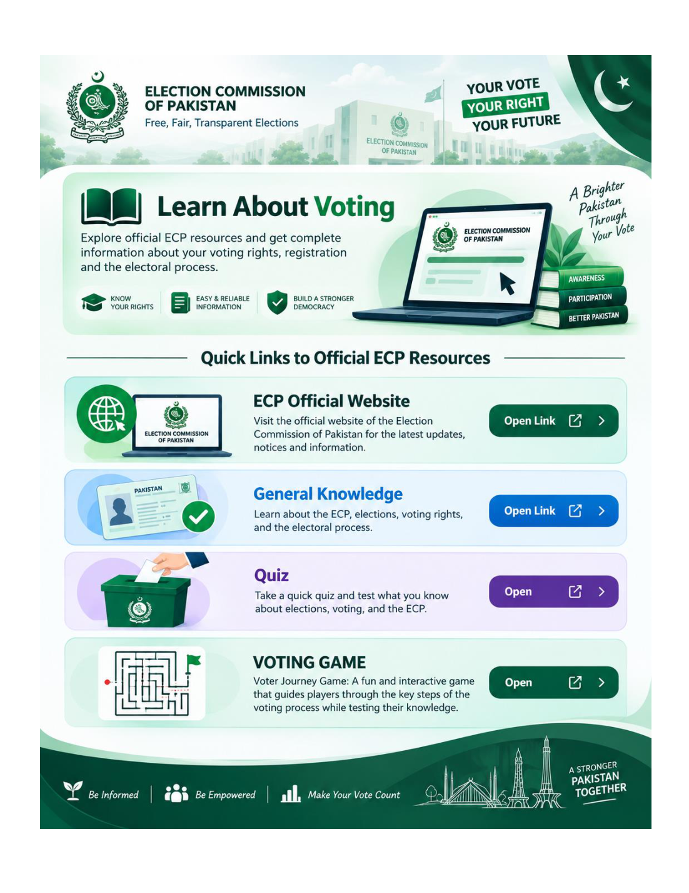

Prepare your CNIC
Take your original CNIC and confirm your assigned polling station before leaving home.
General Knowledge · Voting Guide
Follow five clear stages—from preparing your original CNIC to placing your marked ballot in the box.

Take your original CNIC and confirm your assigned polling station before leaving home.
Go to your assigned station and follow the signs for your polling booth.
Present your CNIC to polling staff for voter-list verification.
Receive your official ballot and move to the private voting area.
Mark your choice privately, fold the paper, and place it in the ballot box.